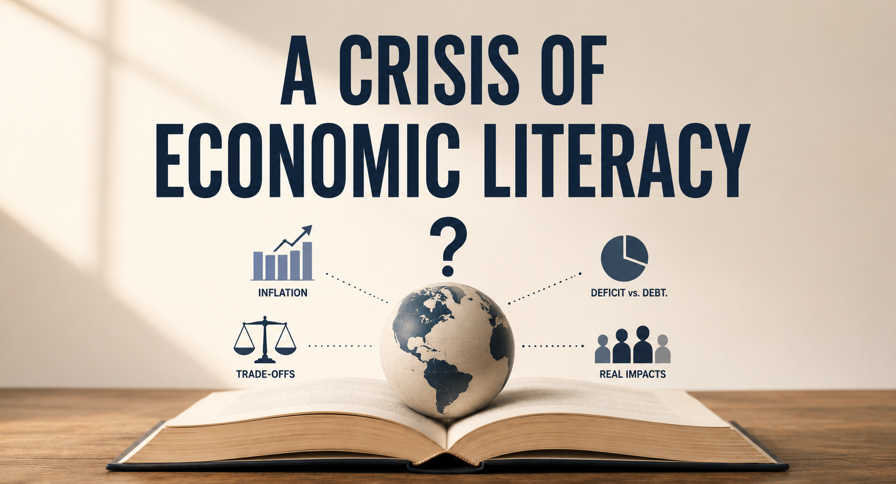
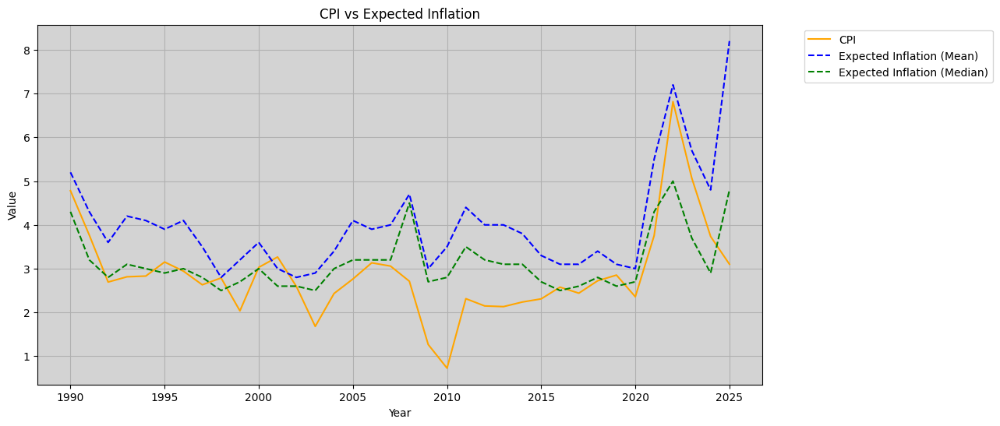
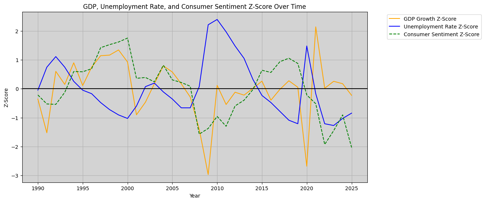

Few subjects occupy as much space in American political discourse as the economy, at the same time, few are as widely misunderstood. Voters routinely express strong views on inflation, taxation, and government spending, but these views are often predicated on incomplete or inconsistent interpretations of how the economy actually functions. The result is not simple disagreement, but a persistent gap between perception and reality. This gap has real implications for how policy is written, supported, and ultimately implemented, as economic literacy shapes how voters evaluate trade-offs and respond to political rhetoric and misinformation.
What it Means to be Economically Literate
Economic literacy does not imply expertise, but rather a foundational understanding of key economic concepts such as real versus nominal metrics, deficits versus debt, and inflation and unemployment. It involves understanding how these metrics are used, what they actually represent, and how they can be misleading when taken out of context. More importantly, it requires an appreciation for trade-offs and an understanding that policy decisions rarely offer unambiguous solutions.
Perception vs. Reality
Understanding the theory behind key economic concepts is one thing; applying them in a manner which accurately shapes our perception is something else entirely. When we compare how individuals perceive economic conditions to key economic indicators, a complicated picture emerges. Perceptions are not entirely detached from reality, but they are often disproportionate, lagged, overestimated, and appear to be influenced by factors not captured by the indicators themselves. This pattern is evident in the case of inflation.

While consumer perceptions do respond to the general trend of economic indicators, they do not mirror them consistently. The comparison between consumer expected inflation and the realized inflation rate shows a persistent gap, with expectations tending to run higher than observed price changes. This divergence is especially evident during more volatile economic periods; expectations rise sharply and are slower to fall than the actual inflation rate. By contrast, during times of relative price stability, expected inflation appears to converge more closely with realized inflation. These patterns suggest that inflation perceptions are not formed solely on the basis of current price levels, but are also influenced by salience and economic narratives.
A similar pattern is observed when comparing consumer sentiment to more broader economic indicators such as GDP growth and unemployment.

Consumer sentiment shows a clear sensitivity to major economic downturns, such as the 2008 financial crisis and the COVID-19 shock, but its relationship with key economic indicators is far from linear. The figure above suggests an asymmetry in how sentiment responds to economic conditions, it collapses almost in tandem with GDP contractions, but exhibits a stickiness upon recovery. Even as GDP growth and unemployment move back toward their average levels, sentiment tends to linger at depressed levels for an extended period of time, creating a gap between observable recovery and consumer sentiment. This gap highlights how perceptions of economic vitality can lag behind measurable improvements. When sentiment remains low despite improving fundamentals, individuals may interpret economic conditions as weaker than they actually are, shaping how they evaluate policy and respond to economic narratives.
Policy Consequences
The gap between economic perception and reality has significant implications on fiscal and economic policy. If voters consistently interpret economic conditions through an imperfect or biased lens, the policies they support will reflect those imperfections. Over time, this can create a disconnect between stated policy goals and actual outcomes, as decisions become increasingly motivated by perception rather than by observable economic conditions.
This dynamic is evident in the post-COVID-19 recovery. By most economic metrics, the economy rebounded relatively quickly: output recovered, unemployment fell to historically low levels, and the inflation rate began reverting back to its baseline. Yet consumer sentiment remained persistently weak. This divergence highlights a gap between observable economic performance and how it is perceived, illustrating the role of economic literacy in shaping how economic conditions are interpreted. When perceptions fail to improve with the data, policy may be judged as ineffective regardless of its outcomes. In turn, this can lead to continued demand for needless, and potentially reckless, policy intervention, further illustrating how economic sentiment can shape policy beyond what is captured by key economic indicators.
Facing My Own Misperception
I myself have been stuck in the gap, so to say. In the Spring of 2024, while I was still in college, I had read in the Financial Times that the Federal Reserve announced plans to cut interest rates. My immediate thoughts were “that’s insane, inflation is far too high to cut rates. They cannot be serious.” But later on I pulled up the raw data on FRED and was shocked to discover that the inflation rate had undergone a very sharp decline over the prior 2 quarters. So my thoughts went from “that’s insane” to “what are they waiting for?” If I remember correctly, they ended up cutting rates later that Fall.
This experience highlights how easy it is to maintain a fundamentally inaccurate view of the economy—even while pursuing a degree in economics, as I was at the time—and underscores the importance of questioning our own assumptions and approaching economic narratives with a critical lens.
Back to BlogViews expressed here are my own and do not represent any institution or employer.